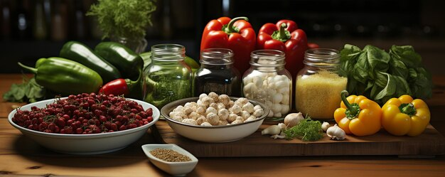

Plan Your Meals
Start by planning your meals for the week. Decide on the recipes you want to make and create a shopping list. This ensures you have all the ingredients you need and helps avoid last-minute takeout.

Batch Cook and Freeze
Cook large batches of your favorite meals and freeze them in individual portions. This way, you have ready-to-eat meals that just need to be reheated, saving you time on cooking during the week.

Prep Ingredients Ahead
Wash and chop vegetables, cook grains, and portion out proteins in advance. Store them in the fridge so they're ready to go when you need to assemble your meals.
Use Versatile Ingredients
Choose ingredients that can be used in multiple recipes. For example, grilled chicken can be used in salads, wraps, and stir-fries, making your meal prep more efficient and varied.

Invest in Quality Containers
Invest in a set of good quality, airtight containers. They keep your meals fresh, make portion control easier, and are convenient for on-the-go lunches.

Incorporating these meal prep tips into your routine can help you maintain a healthy diet even on your busiest days. Stay tuned for more tips and recipes to simplify your meal prep process!